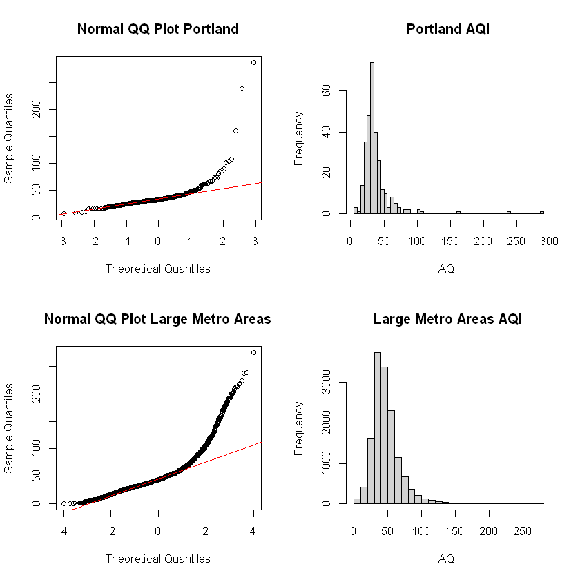
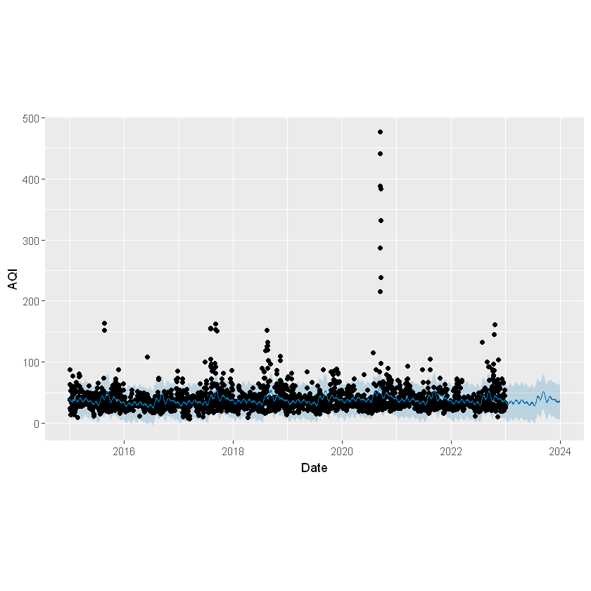
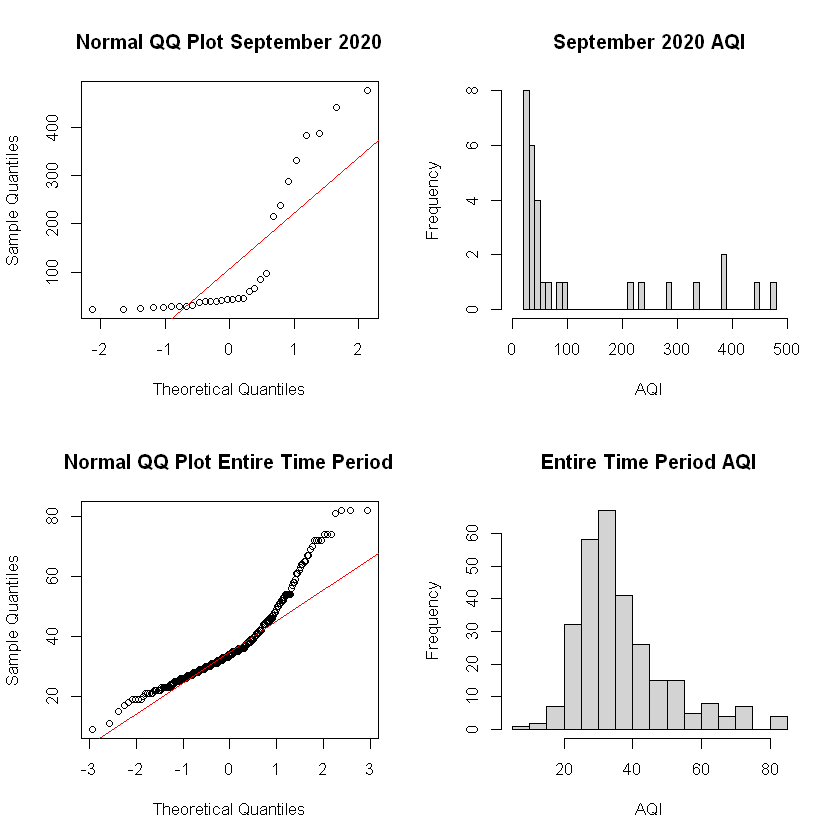
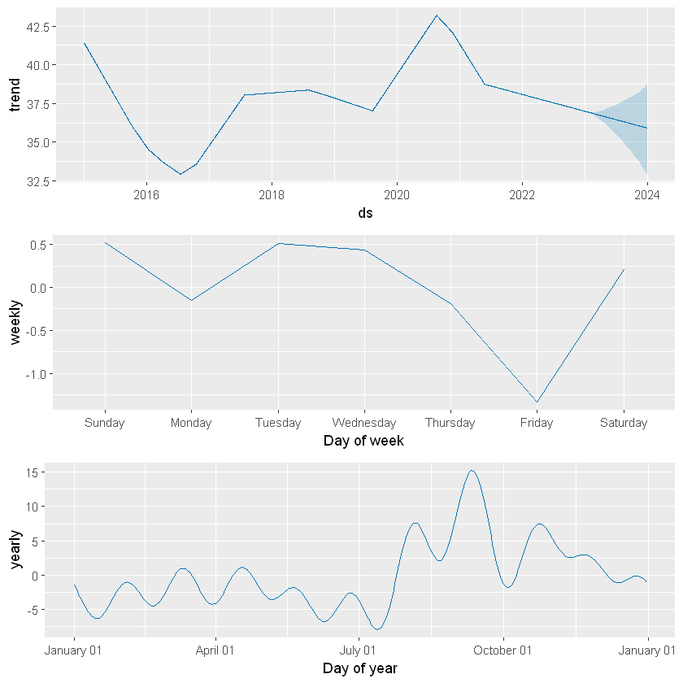
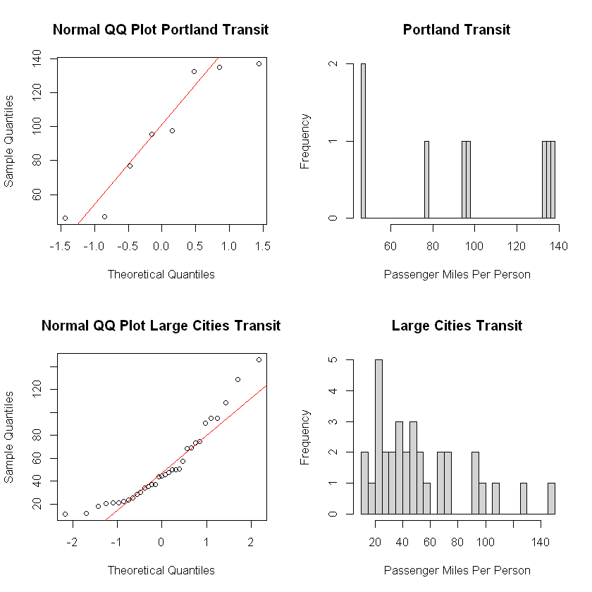

Prophet AQI Trend Forecasting and Hypothesis Testing
To gain an understanding of how Portland’s AQI differs from other large cities, we can start by running a hypothesis test to determine the significance.
Initially we can run a two sample t-test to show that Portland’s AQI average is statistically greater than the average AQI of all large metropolitan areas within the US. We compare the sample of Portland AQI datapoints in the time period with the sample of all metropolitan areas with a population greater than one million.
Null Hypothesis: The Portland AQI is greater than or equal to the AQI of all large metro cities in the US.
Alternate Hypothesis: The Portland AQI is less than the AQI of all large metro cities in the US.
Assumptions:
Simple Random Sample: Data is a simple random sample. We have selected 10% of values from each population set.
Independence: AQI in Portland does not affect AQI in the rest of the country. However, the dataset for the large metro areas does include Portland, so Portland AQI will be repeated within both population groups. Both groups are largely independent, though this should be noted.
Normal Distribution:
From the QQ plots and histograms, we can see both datasets are clearly not normally distributed. They have long tails to the right. However, since the tails have such low frequencies and the samples are very large, this likely will not impact the results.
The partial violations of the assumptions in the t test in our analysis suggest that the conclusions should be considered with a degree of caution.
Two Sample T Test Portland AQI vs Large Metro Areas AQI
Welch Two Sample t-test
data: pdx_aqi_sample and lmaqi_sample
t = -6.7452, df = 300.51, p-value = 3.922e-11
alternative hypothesis: true difference in means is less than 0
95 percent confidence interval:
-Inf -7.516953
sample estimates:
mean of x mean of y
38.29452 48.24560 Based on the low P-value of < 2.2*10^-16, we can safely reject the null hypothesis. We conclude that Portland’s AQI mean is not greater than or equal to the AQI of all large metropolitan areas. This agrees with our initial observations on the greater AQI outcomes of Portland, and specifies the significance of this statistically.
Prophet Data Forecasting
Prophet by Meta is used as time series prediction to estimate and map trends based on our data. We use this to see how AQI trends vary by day, month, and year. It is also able to give us a forecast for a given period after the end of our data which we can analyze and use to anticipate future AQI values.
Data Forecasting
To use the package, data must be in the format of a two column graph, with the first column being the date data, and the second being the variable being mapped and predicted. In this case, this predicted variable is AQI.
| ds | y | |
|---|---|---|
| <chr> | <int> | |
| 1 | 2019-06-25 | 29 |
| 2 | 2019-06-26 | 31 |
| 3 | 2019-06-27 | 19 |
| 4 | 2019-06-28 | 32 |
| 5 | 2019-06-29 | 34 |
| 6 | 2019-06-30 | 41 |
The package allows a future period to be generated, which can be specified and added to the end of the time data. It can then predict future AQI values for the new data period.
| ds | yhat | yhat_lower | yhat_upper | |
|---|---|---|---|---|
| <dttm> | <dbl> | <dbl> | <dbl> | |
| 3282 | 2023-12-26 | 36.31957 | 6.880788 | 65.01393 |
| 3283 | 2023-12-27 | 36.19091 | 8.386856 | 66.43147 |
| 3284 | 2023-12-28 | 35.45571 | 4.982899 | 63.52368 |
| 3285 | 2023-12-29 | 34.15332 | 7.356976 | 64.33663 |
| 3286 | 2023-12-30 | 35.47973 | 7.179078 | 64.17296 |
| 3287 | 2023-12-31 | 35.52047 | 6.273700 | 62.73721 |
The graph below (figure 4324), shows the supplied data with the future prediction over the future period. The actual values are shown with the black datapoints, and the blue line represents the prediction. The upper and lower bounds of the error are represented with the transparent blue area. Each year, the data spikes during the late summer to early fall. Even more significant is the large spike in September 2020. What caused it? How significant was it?

2020 Wildfires
In September 2020, a wildfire ravaged the state of Oregon, as well as many other areas of the United States and Canada. The fires burned more than one million acres of land, destroying thousands of homes, and killing 11 people. 500,000 Oregonians were on evacuation alert, and 40,000 were actually forced to leave (Oregon Department of Emergency Management). Anyone around during that time will recall the orange skies, thick atmosphere, and strong smoke smell, but how unusual was this period actually?
To understand, we will conduct a two sample t-test to see whether or not this month had greater than usual AQI.
Null Hypothesis: September 2020 AQI less than or equal to AQI of entire period in Portland
Alternate Hypothesis: September 2020 AQI greater AQI of entire period in Portland
Assumptions:
Simple Random Sample: Data is not a simple random sample. Since there are so few datapoints for the September 2020 population (30 datapoints), taking a 10% sample may not be suitable to accurately capture the variance of this month. Thus, it was decided to use the entire population as the sample. A 10% sample will be taken of the entire Portland data population.
Independence: AQI in September 2020 does not affect AQI in the rest of the timeframe.
Normal Distribution:

From the QQ plots and histograms, we can see both datasets are clearly not normally distributed. They have long tails to the right, and the September 2020 dataset is oddly shaped due to lack of data.
The partial violations of the assumptions in the t test in our analysis suggest that the conclusions should be considered with a degree of caution.
Two Sample T Test September 2020 vs Full Period of Portland AQI
Welch Two Sample t-test
data: pdx_sep_20_aqi and pdx_data_sample
t = 3.23, df = 29.05, p-value = 0.001535
alternative hypothesis: true difference in means is greater than 0
95 percent confidence interval:
40.5868 Inf
sample estimates:
mean of x mean of y
122.66667 37.03767 Based on the low p value, we reject the null. We conclude that the September AQI in Portland is not less than or equal to the AQI for the entire period. The wildfire had a significant effect on the air quality, making it much more difficult to breathe. This aligns with the observation of the large spike during this period. We must do more to address and combat the wildfires that not only harm the air we breathe, but cause long lasting damage to the local environment.
AQI Trends
Prophet’s plot component function allows us to see specific trends including the total (entire eight years), weekly, and yearly trends in figure 21111. This allows us to see how AQI changes by day. In the top full time span graph, it shows the potential spread of data for the predicted period with the transparent blue area. We can also see that day of the week tends to have very little impact on the trend(it may look significant but it is only moving up and down less than 1.5 AQI between days). Finally, from the yearly graph we cab see the consistent increase during the late summer to mid fall each year.

Cross Validation
How accurate are these predictions? A cross validation predicts over the period from the cutoff date up to specified date in the ds column date.
Cross validating the predictions allows us to create many estimates from a starting date up to an end date within out timeframe. In this instance, the tool predicts using start dates every half a year. It will predict AQI for that date to every day up to a year after the start date, giving us 365 estimates per start date. We then compare all estimations seeing how accurate the prediction is for a number of days after the start date as shown in figure 348483 below.
The tool allows us to measure the difference in predicted y and actual y with a variety of different measurements. In the figure below, we have selected mean absolute percent error, to show how if the error on average increased as the prediction got further from the starting point.

The light grey datapoints represent the mean absolute percent error. A datapoint with a x value 200 and y value 1 means it was predicted for a period of 200 days after the cutoff date, and was 1% off the actual value. We can see that most predictions are under 1%, making this a pretty decent estimation. The fact that they do not increase over time allows us to have a certain degree of confidence in the prediction even a year out. The blue line shows the mean of these datapoints.
Portland’s Transit System
As shown in the graphs and tests above, Portland has greater than normal AQI outcomes when compared with other cities of high populations. The AQI follows certain yearly trends, with the notable exception in September 2020 due to the large wildfires. Using Prophet, we are able to predict AQI up to a year out of the final datapoint in the time period. What exactly is the reason for these outcomes in this city?
One hypothesis for Portland’s better air quality outcomes is due to the increased focus on public transportation. Portland has placed high emphasis on utilizing public transit, with rates comparable to larger cities and higher than most other cities of its size. We will run a two sample t test to see how Portland’s rate of ridership compares with other large cites.
We have standardized rates by passenger miles ridden per person. This is the total amount of miles ridden in a given year divided by the population. This allows us to properly compare cities with different population sizes.
Null Hypothesis: Transit ridership in Portland is less than or equal to transit ridership across the country (large metro areas only).
Alternate Hypothesis: Transit ridership in Portland is greater than transit ridership across the country (large metro areas only).
Assumptions:
Simple Random Sample: Data is not a simple random sample. Since there are so few datapoints for the Portland transit ridership population (8 datapoints), taking a 10% sample may not be suitable to accurately capture the variance of this month. Thus, it was decided to use the entire population as the sample. A 10% sample will be taken of the large cities transit population.
Independence: Transit ridership in Portland does not affect transit ridership in the rest of the country.
Normal Distribution:

From the QQ plots and histograms, we can see both datasets are clearly not normally distributed. The Portland data has so few datapoints that it is hard to tell if it has a normal distribution or not. The large city transit data seems normal with the exception of one datapoint.
The partial violations of the assumptions in the t test in our analysis suggest that the conclusions should be considered with a degree of caution.
Two Sample T Test Portland Transit Ridership vs Large Metro Area Ridership
Welch Two Sample t-test
data: pdx_transit$pass_miles_per_person and large_metro_transit_sample
t = 3.0429, df = 9.9923, p-value = 0.006206
alternative hypothesis: true difference in means is greater than 0
95 percent confidence interval:
17.77174 Inf
sample estimates:
mean of x mean of y
95.90601 51.95093 Based on the low p value, we reject the null. Portland transit ridership is not less than or equal to the average transit ridership of large metro areas across the country. Portland’s higher transit numbers could be an influence in the better air outcomes of the city. However, because transit ridership is better in some other cites such as Baltimore and New York but not reflected in their AQI outcomes, this leads us to believe that transit ridership does not have very significant influence in the air quality. We will explore which features have a greater effect on AQI in the upcoming Machine Learning section.